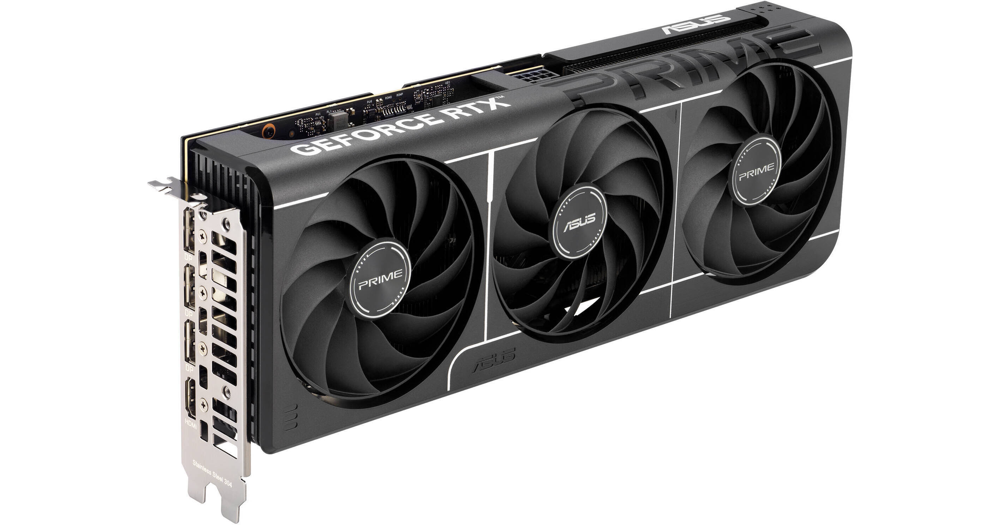

1. Gigabyte RTX 5070 windforce
The Gigabyte RTX 5070 Windforce is a strong GPU that runs games really well at 1440p and even some 4K, plus it has 12GB VRAM so it should last a while. It stays pretty cool and quiet thanks to the Windforce fans, and it’s built for newer features like DLSS 4 and ray tracing . Overall it’s a solid card, but it’s kinda expensive and not the best value compared to some other options..
2. XFX Prime RX 9070XT
The XFX RX 9070 XT is a really powerful graphics card that can run games super well at 1440p and even 4K, and it has a lot of VRAM so it should last a while. It looks cool and performs great, but it uses a lot of power and can get pretty hot. Overall it’s a great graphics card, but it’s also kinda expensive and not perfect for ray tracing.
3. ASUS Prime RTX 5060 Ti

The ASUS Prime RTX 5060 Ti is a pretty solid graphics card that runs games really well at 1080p and okay at 1440p. It’s quiet, looks clean, and has good features, but the 8GB VRAM isn’t that great for newer games. Overall it’s good, but kinda overpriced for the performance you get.
4. SPARKLE Intel Arc B580
The SPARKLE Intel Arc B580 is a really good budget graphics card that runs most games well at 1080p and even 1440p. It has lots of VRAM and cool features, but the drivers can still be a bit buggy sometimes. It’s great value for money, but not the best if you care about ray tracing or super stable performance.